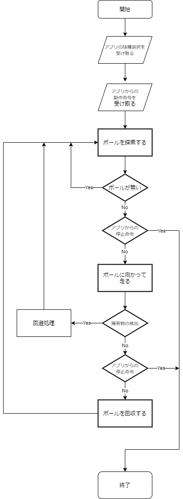

| 名称 | MIRS2004ソフトウェア詳細設計書 |
|---|---|
| 番号 | MIRS2004-SOFT-0002 |
| 版数 | 最終更新日 | 作成 | 承認 | 改訂記事 |
|---|---|---|---|---|
| A01 | 2021.01.27 | 佐藤恭理､中村伸哉 | 初版 |
本ドキュメントはMIRS2004の詳細設計書、ソフトウェアについてのドキュメントである。
基本機能をtab.1に示す。
tab.1 基本機能
| 機能 | 目的 | 方法 | 記述言語 |
|---|---|---|---|
| ボール検知機能 | ボール回収を実現するため | カメラを用いてボールを画像認識する | Python |
| ベルトコンベア機能 | ボールを回収、格納するため | モータを用いて軸を回転させ、ベルトコンベアを起動させる | C言語 |
| 衝突回避機能 | 人といった障害物に衝突する事故を防ぐため | 超音波センサを用いて、人などの大きな物体を衝突前に検知し、後退する | C言語 |
| ディスプレイ表示機能 | ディスプレイをつけ、MIRSに表情を表示させるため | RaspberryPiにつなげて、電源投入時から表示させる | Python |
| アプリケーション連携機能 | ユーザにMIRSの動作開始や停止といった最低限の制御を行わせることにより、ユーザ体験を向上させるため | アプリケーション開発をする |
各機能実現のためのモジュール構成を以下に示す。
Arduinoのモジュール構成図をfig.1に示す。
また、fig.1の新規追加、または変更を行ったモジュールの詳細をtab.2に示す。
fig.1 Arduinoモジュール構成図
tab.2 Arduino新規、変更モジュール
| モジュール名 | 概要 | 関数名 | 備考 |
|---|---|---|---|
| slave | 各種の処理の実行を行う | void slave() | 引数、戻り値は共に特になし |
| motor_conveyor | コンベアを動かすためのモーターの制御を行う | void motor_conveyor_open() void conv_ctrl_execute() void conv_ctrl_set(conv_state_t conv_state) void conv_ctrl_get(conv_state_t *conv_state) |
コンベアのステータスを引数とする |
RaspberrPiにはメイン処理用のC言語プログラムと画像認識用の Pythonプログラムを実装する。それぞれのモジュール構成を以下に示す。
C言語プログラムのモジュール構成図をfig.2に示す。
また、fig.2のモジュールの詳細をtab.3に示す。
fig.1 C言語モジュール構成図
tab.3 C言語新規、変更モジュール
| モジュール名 | 概要 | 関数名 | 備考 |
|---|---|---|---|
| pilot_tb | テニスボール回収用の初期操作を行う | int main() | 引数、戻り値は共に特になし |
| pilot_tt | 卓球ボール回収用の初期操作を行う | int main() | 引数、戻り値は共に特になし |
| stop | 実行中の動作を停止する | int stop() | 引数、戻り値は共に特になし |
| C_send | Pythonと通信を行う | void C_send(int mode) | int型の変数を引数とする |
| deg | pythonと通信を行い、最も近いボールとの角度を測定する | int deg(int *p) | int型の変数を引数とする |
| request | Arduinoへ命令を送る | void request_set_convmode(conv_state_t conv_state) int request_get_convmode(conv_state_t *conv_state) |
コンベアのステータスを引数、戻り値とする |
Pythonプログラムのモジュール構成図をfig.3に示す。
また、fig.3のモジュールの詳細をtab.4に示す。
fig.1 pythonモジュール構成図
tab.4 python新規モジュール
| モジュール名 | 概要 | 関数名 | 備考 |
|---|---|---|---|
| py_recv | C言語と通信を行う | py_recv() | int型の変数を戻り値とする |
| face | 卓球ボール回収用の初期操作を行う | change() | 引数、戻り値は共に特になし |
| deg | 画像認識を行い、最も近いボールとの角度を測定する | 関数なし | 引数、戻り値は共に特になし |
フローチャートを下記に示す
Fig2. フローチャート
MIRS機体正面に設置したLCDモニターにTkinterを用いて表情を表示する。表示する表情を図、図に示す。
Fig3. MIRS表情表示例
iOSアプリまたはWebアプリケーションとして実装する。実装予定のUIを以下に示す。
また、プロトタイプをAdobe XDにて示す。
Fig4. UIプロトタイプ